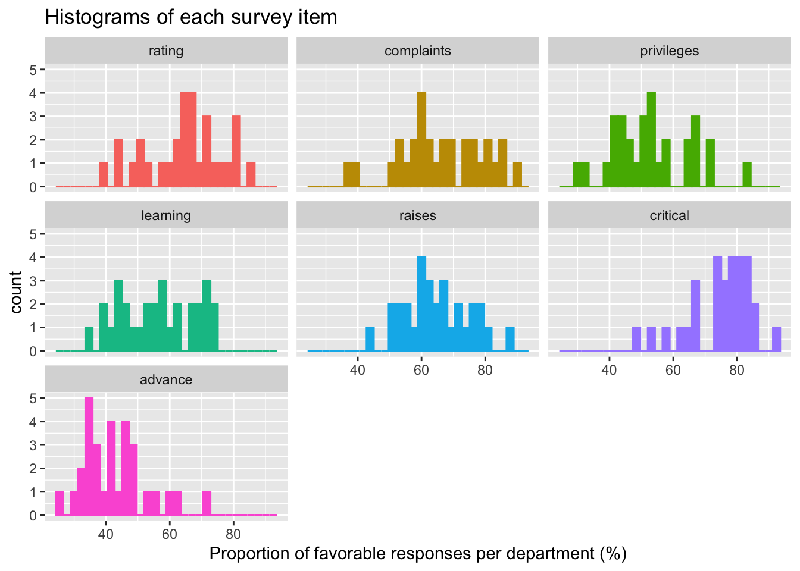
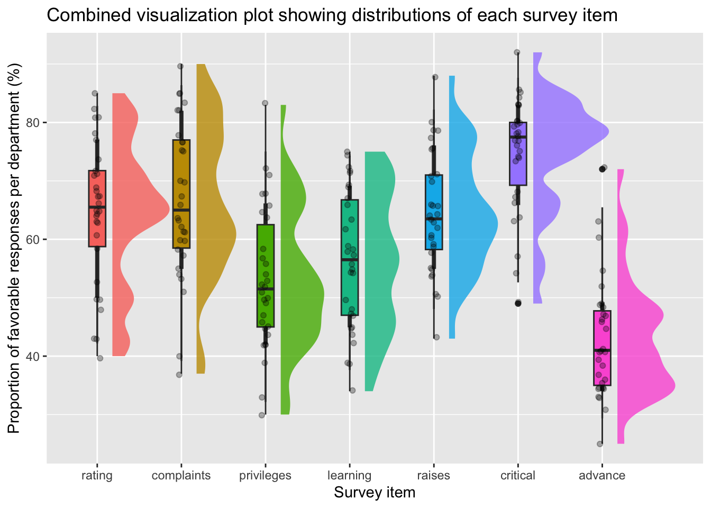
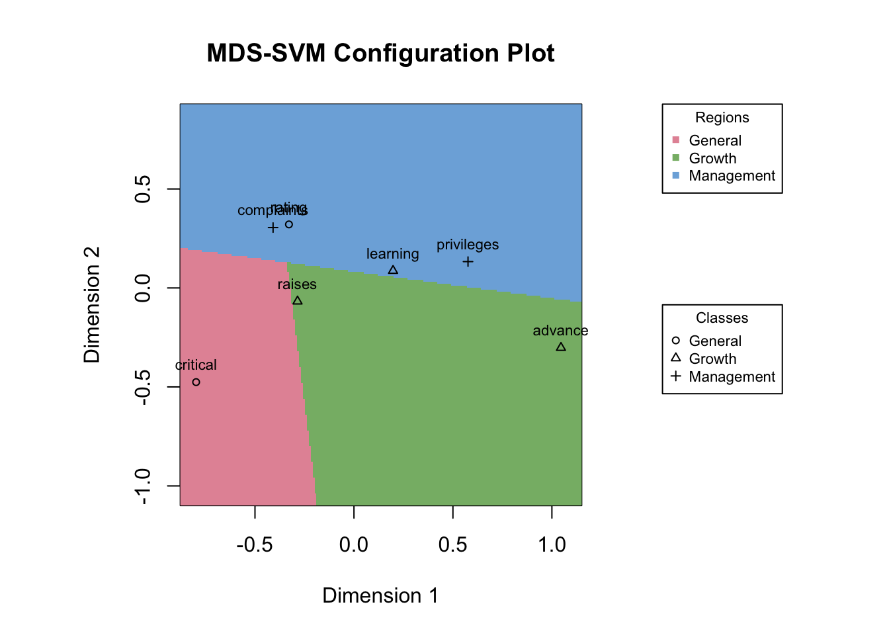

Hypothesis generation is the purview of exploratory work. Hypotheses can sometimes be derived directly from highly specified theories, but in the messy world of the behavioral and social sciences, it is more common to construct hypothesis on the basis of patterns observed in exploratory datasets or selected from our experiences in the world.
John Wilder Tukey
The principle of separating exploratory and confirmatory research into distinct lines of inquiry—crucially, inquiries conducted on separate datasets—derives from the original formalization of exploratory data analysis (EDA) developed by John Tukey in the 1970s-80s (Tukey 1970, 1980a). Tukey championed the value of questions that ask, “what is \(X\) like?” or “what characterizes \(X\)?” These types of questions orient us to analyses that help us document the existence of a phenomenon, describe its features, quantify it, and summarize it.
Descriptive analysis: charting new territory
In some cases, description and quantification of a phenomenon might itself satisfy your immediate research question. This is often the case when description alone is a considerable challenge, such as when a dataset is especially large or complex. The toolbox of descriptive analysis includes many techniques for summarizing and organizing a dataset to reveal its structure in human-readable terms.
Initial description: summary statistics and distribution visualizations
Let’s use an example dataset from the datasets package in R to illustrate some of these descriptive analyses in action.
The attitude dataset contains aggregated data from the Chatterjee-Price attitude survey, in which clerical employees across 30 departments of a large organization were asked to evaluate their employers on a series of topics. These topic questions are organized into 7 variables, shown and described in Table 1.1 (descriptions derived from the dataset’s documentation).
Table 1.1
Variable
Item description
rating
Overall rating
complaints
Handling of employee complaints
privileges
Does not allow special privileges
learning
Opportunity to learn
raises
Raises based on performance
critical
Too critical
advance
Advancement
The complete attitude dataset is rendered in Table 1.2. Each row of the data frame corresponds to one of the organization’s departments, and the values in each column are the percentages of favorable responses to each topic question given by the employees sampled in a given department.
Show code
# Load attitude datadata("attitude")# Data previewdatatable(attitude,caption = htmltools::tags$caption(style ='caption-side: bottom; text-align: left;','Direct preview of the Chatterjee-Price attitude survey data.' ), )
Table 1.2
As a first step in organizing these data to understand them better, we typically compute summary statistics: metrics that help characterize the distributions of our variables. These are generally metrics indicating the location (mean, median, etc.) and dispersion (standard deviation, quartile range, etc.) of a given variable’s distribution. Table 1.3 is an example summary table for our employee attitude data (computed using the sumtable() function from the vtable package in R):
Show code
# Construct summary table using sumtable() and render with datatable()sumtable(attitude, out ='return') %>%datatable(caption = htmltools::tags$caption(style ='caption-side: bottom; text-align: left;','Summary statistics table for attitude dataset by variable.' ) )
Table 1.3
These summary metrics are already an improvement over the raw data alone in our attempt to characterize the data, but we can do much better by adding visualizations. Even simple descriptive visualizations like the histograms shown in Figure 1.1 can help give us a better impression of each of the distributions in the data.
Show code
# Plot of all variable histograms in separate panels (facets)ggplot(data = attitude %>%pivot_longer(cols =everything()) %>%mutate(`Survey item`=factor(name, levels =colnames(attitude)))) +geom_histogram(aes(x = value, color =`Survey item`, fill =`Survey item`)) +xlab('Proportion of favorable responses per department (%)') +ggtitle('Histograms of each survey item') +facet_wrap(~`Survey item`, ncol =3) +theme(legend.position ='none')

Figure 1.1: Histograms of variable distributions in attitude survey dataset.
Histograms are great for visualizing individual distributions one at a time, but we will most likely want to compare the distributions of each survey item to one another. We can use other types of distribution visualizations such as boxplots, violin plots, or variations thereof to plot multiple distributions side by side. Figure 1.2 shows an example visualizing the same survey items together on a single plot using a combination of boxplots, smoothed histograms, and raw data points. (The tools for generating these plots come from extensions of the ggplot2 package in R, in particular the ggdist package.)
Show code
# Combined plot of distributions visualized across multiple methods at onceggplot(data = attitude %>%pivot_longer(cols =everything()) %>%mutate(`Survey item`=factor(name, levels =colnames(attitude))),aes(x =`Survey item`, y = value, fill =`Survey item`)) +stat_halfeye(alpha = .8, adjust = .5, justification =-.2) +geom_boxplot(width = .2) +geom_jitter(width = .05, alpha = .3) +ylab('Proportion of favorable responses per department (%)') +scale_x_discrete(labels =label_wrap(12)) +ggtitle('Combined visualization plot showing distributions of each survey item') +theme(legend.position ='none')

Figure 1.2: Combined descriptive plot visualizing variable distributions using a combination of boxplots, smoothed histograms, and raw data points.
Now that we have visualized the individual distributions of each variable and begun to compare them visually to one another, we can use more complex descriptive tools to quantify and map the relationships among the variables. For example, we might compute the relative similarities between each variable using metrics such as correlation or Euclidean distance, and then characterize and visualize those relationships using tools like cluster analysis and dimensionality-reduction techniques.
Below is an example of these more advanced exploratory methods applied our attitude data. For this example, we have invented three categories for the variables in the data: “General” for the items “Overall rating” and “Too critical”, “Management” for the items “Handling of employee complaints” and “Does not allow special privileges”, and “Growth” for the items “Opportunity to learn”, “Raises based on performance”, and “Advancement”. With this category structure in our data, we can combine two techniques to see whether the multivariate relationships in the data reflect the expected category structure. The first technique is multidimensional scaling (MDS), which allows us to embed the relationships between all the variables in a 2-dimensional scatter plot for easy visualization. The second technique is a type of machine learning classification method called support vector machine (SVM) classification, which will try to place the variables into categories based on the relationships in the data. (see Mair, Cetron, and Borg 2022 for a tutorial paper on the combined use of these two methods.)
Show code
# Load the smacof package which provides tools for MDS and SVM joint analysisp_load(smacof)# Create distance matrix for variables using Euclidean distance (default).D <-dist(t(attitude))# Note that transposition of the data frame (using t()) is necessary because dist()# compares each row to each other row, and we want to compare the variables, which# are set up in the columns of a data frame by default.# Fit a 2-dimensional ordinal MDS solution using the distance matrixmdsfit <-mds(D, ndim =2, type ='ordinal')# Define categories for the variablesattitude_categories <-factor(c('General', 'Management', 'Management', 'Growth', 'Growth', 'General', 'Growth'))# Add category information to the resultant MDS configuration in preparation for SVM categorizationattitude_mds_cat <- mdsfit$conf %>%as.data.frame() %>%mutate(Category = attitude_categories)# Fit SVM classifier to try and categorize the variables from the MDS solution# (we are using a bare-bones example without tuning the SVM)svmfit <-svm(Category ~ D1 + D2, data = attitude_mds_cat, kernel ='linear')# Plot the joint SVM/MDS configuration plotsvm_mdsplot(mds_object = mdsfit, svm_object = svmfit, class = attitude_categories, inset =c(-.5, .5))

Figure 1.3: Exploratory classification analysis plot showing multidimensional scaling (MDS) used together with support vector machine (SVM) classification on our modified attitude example data.
Figure 1.3 shows the results of the exploratory MDS/SVM analysis. The color-coded regions reflect the SVM classifier’s predicted category assignments, and the point shapes represent the actual category assignments. As we can see, the data align somewhat well with the expected categories, although not perfectly—the classifier places “Overall rating” and “Opportunity to learn” incorrectly into the “Management” category, due to apparent similarities between those variables and the other “Management” variables.
Multivariate exploratory methods like these can also be used to reveal structures in the data that are not necessarily known in advance, and often in much larger datasets. In genetics research, for example, researchers will characterize cell samples based on the cells’ different transcription profiles across thousands or tens of thousands of different genes, hoping to identify sensible structures through exploratory analyses. To achieve a working description of their complex sample data, biologists will use techniques like principal components analysis (PCA) to organize cell samples based on variance in their gene expression patterns, aiming to group together cells that express similar gene profiles (see Piper et al. 2023 for a basic tutorial).
Figure 1.4: PCA in genetics research
Figure 1.4 shows an example of this analysis in action in a genetics paper from Pollen et al. (2014) (this figure is discussed as an example in this tutorial video). In this example, PCA is used to differentiate cell types based on gene transcription heterogeneity.
Methods like PCA, MDS, SVM classification, and other similar techniques are powerful descriptive methods for the current era of “big data”, which continues to grow and encompass more and more scientific fields. These methods can help make complex, feature-rich data more approachable and provide a launchpad for the generation of hypotheses.
From description to hypothesis
In many cases, exploratory description is a prerequisite step to start building up a research program so that you can design subsequent confirmatory analyses. Particularly if your research constitutes the very first inquiry into a new topic area, you might need to dedicate multiple early studies to exploration and description alone before you are ready to generate and test specific hypotheses. Before you can start worrying about statistical power, sample sizes, and p-values, you need to decide what question you want to ask, and how it should be formalized into a statistical model or test.
This process—of using exploration to inform hypothesis generation—is complex. And yet, we often mislead ourselves into thinking it is straightforward. To correct this misconception, we can again turn to Tukey, who articulated his concern about this issue in his piece, “We Need Both Exploratory and Confirmatory,” published in The American Statistician in 1980. In that article, Tukey emphasized that the scientific method is not linear, but iterative(Tukey 1980b), and illustrated this distinction using a series of diagrams (reproduced below with adjusted formatting):
“We are, I assert, all too familiar with the following straight-line paradigm—asserted far too frequently as how science and engineering function:
Tukey goes on to explain that there is an important difference between having an idea of a question (which we can describe in words) and having a statistically-supportable question (which we can describe in hypothesis terms). In order to obtain a research question that is ready for confirmatory analysis, we may have to repeat the exploratory process many times, refining our question and design along the way.
Post-hoc exploratory analysis
Finally, exploratory analysis can be a follow-up to a completed confirmatory analysis to motivate new, subsequent lines of inquiry (see Fife and Rodgers 2022). It is important to always be clear about exactly which analyses are exploratory in this context, so as not to imply that inferential conclusions should be drawn from them. Nevertheless, researchers should not shy away from using exploratory analysis as a generative tool for guiding the long-term development of a research program.
Fife, Dustin A., and Joseph Lee Rodgers. 2022. “Understanding the Exploratory/Confirmatory Data Analysis Continuum: Moving Beyond the “Replication Crisis”.”American Psychologist 77 (3): 453–66. https://doi.org/10.1037/amp0000886.
Mair, Patrick, Joshua S. Cetron, and Ingwer Borg. 2022. “Using Support Vector Machines for Facet Partitioning in Multidimensional Scaling.”Multivariate Behavioral Research 0 (0): 1–17. https://doi.org/10.1080/00273171.2022.2035207.
Pollen, Alex A., Tomasz J. Nowakowski, Joe Shuga, Xiaohui Wang, Anne A. Leyrat, Jan H. Lui, Nianzhen Li, et al. 2014. “Low-Coverage Single-Cell mRNA Sequencing Reveals Cellular Heterogeneity and Activated Signaling Pathways in Developing Cerebral Cortex.”Nature Biotechnology 32 (10): 1053–58. https://doi.org/10.1038/nbt.2967.
Tukey, John W. 1970. Exploratory Data Analysis. Addison Wesley Publishing Company.